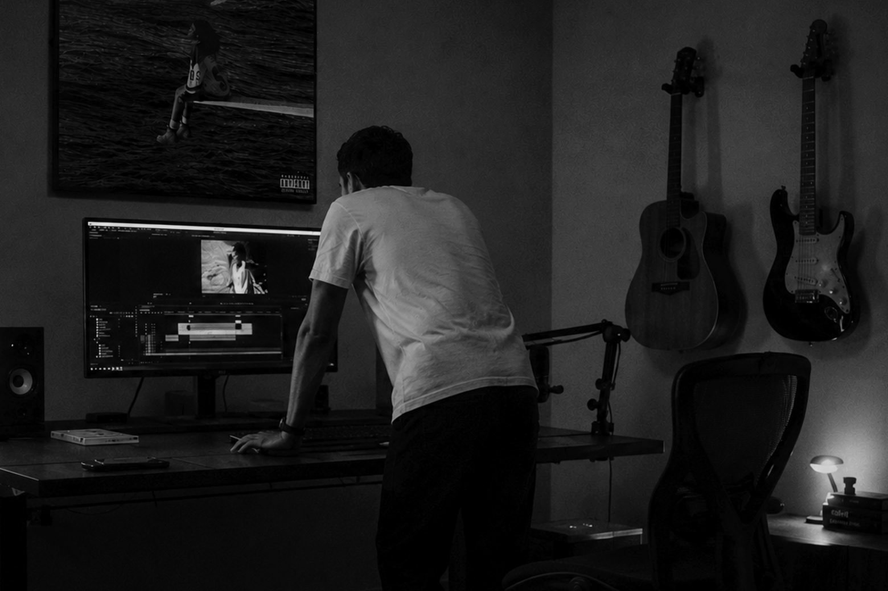
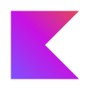
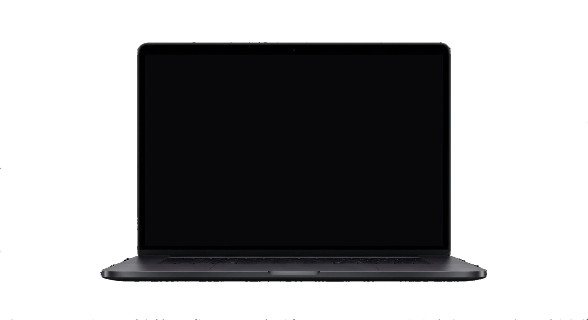

01AI & applied ML
Retrieval, agents and evaluation — AI products, not a bolted-on chatbot.
 PyTorch
PyTorch TensorFlow
TensorFlow- Python
We build and operate AI-native software products for companies that need serious engineering. Live in six weeks, not six quarters.

The software company inside Manzar. Senior engineers who build the thing and then run it in production — not a ticket queue.
What we doWeeks, typical, from
signed scope to a live MVP
Products shipped
and still in production
Countries where
our work runs daily
Uptime across the
platforms we operate
Six weeks from signed scope to live, then ninety days on call. This is the whole path.
What gets built AI products · Enterprise & ERP · IoT & connected systems · SaaS platforms · MVPs · Mobile
AI-native software products for companies that need serious engineering — from the model down to the metal it runs on.

01Retrieval, agents and evaluation — AI products, not a bolted-on chatbot.

02Infrastructure as code that holds when the traffic is real.

03Typed end to end, from database schema to design system.

04One senior team, shipping to both stores.

Kotlin
05Firmware to dashboard — hardware in the field, watched with lead time.
Products people keep using after the novelty wears off.
The model wired into what actually runs your company — ledgers, tickets, documents, your own APIs — so every answer cites a record. Anything irreversible stops for a named human.
Talk about an AI buildWhere is invoice 4471?
Cleared 12 March — $8,240 by ACH, reference 9F2C. billing_ledger · payments_api
Refund it.
Held for approval That is over your $5,000 limit, so I have not sent it. Queued for Sara with the invoice attached. policy · refund_limit_v3
In-product chat grounded in your documents and databases.
Answer, qualify, book — then hand to a human where you decide.
Drafting and routing run unattended. Costly actions wait for a name.
A test suite for a non-deterministic system, plus PII redaction.
Built here Ardenta is our own AI front desk: answers around the clock, cites the document it used, books into the calendar, keeps your existing number. Join the waitlist →
The platform a company runs on, and the hardware reporting into it.
Enterprise & ERP
HR and payroll, finance, inventory, procurement, field operations. Built as one platform with real roles and a real audit trail — not nine tools and a spreadsheet holding them together.
IoT & connected
Fleets, sensors, access control and device policy, wired to dashboards people act on. Telemetry that arrives, commands that land, and a record of both.
Regulated work Healthcare and finance builds carry these from week one — HIPAA, PCI DSS, SOC 2, ISO 27001. We build to the controls and hand you the evidence; the certificate is issued to you by your auditor.
The part people call “the product”. Interfaces with a point of view, motion with a reason.
Launches, rebrands, campaign pages. Fast enough to score green across the board, distinct enough to be remembered after the tab is closed.
Dashboards, consoles, and tools people sit inside for eight hours. We sweat the empty states, the keyboard paths, and the thousand-row tables.
Scroll stories, launches with a pulse, product films embedded where they convert. This is where the film side of Manzar earns its keep.
The product behind the product. One language every screen speaks.
Color, type, and spacing as data. Dark mode stops being a rebuild.
Accessible, documented, versioned. Figma and code that agree with each other.
Contribution rules and changelogs, so the system outlives its authors.
WCAG AA as a floor, not a feature. Audited with real assistive tech.
Selected work
Six sites, designed and built end to end. Pick one from either side, then rest your cursor on the screen — or click it — and use the real thing.

Marketing site with real-time 3D that stays smooth on an ordinary laptop.

How we work
You will not be handed to an account manager. The people who scope your project are the ones who write it, and they stay in every call until it is live.
If a deadline is wrong you hear it in week one, not week eleven.
Uzair Founder, Manzar
Before you commit
Budgets drift, dates slip quietly, teams go dark after launch. Six clauses answer that — and all six are in the agreement, not just on this page.
One number, approved by you at the end of the scoping week. It moves only if you change the scope in writing.
From week two you get a URL, not a status report. Progress you cannot open is not progress.
Repo, cloud, domain, design files — opened under your organisation in week one. Nothing to migrate at the end.
A date at risk or an approach that is not working goes in that Monday’s note, not week eleven’s.
Included, not invoiced. A written runbook, a recorded walkthrough, and the same people on the same channel.
The brief, the architecture and the estimate are yours whatever you decide next.
Standard terms The agreement goes out unredacted after the first call. Request a copy →
Before you ask
“If your question isn't here, it fits in an email. We read everything that lands in the inbox.”
Six weeks from signed scope to a product real users can log into. An openable build in week two, a feature-complete beta around week four. Tell us your date on the first call — if it can't be held you'll hear that immediately, not in week eleven.
Yes. Assistants and copilots inside your product, voice and phone agents, and automation with a human gate on anything irreversible — all grounded in your own data so answers cite a record. Evals, PII redaction and fallbacks come with the build.
Yes. Those controls go in from week one — append-only audit trails, least privilege, managed keys, data residency — and the evidence pack ships with the code. The certificate is issued to you by your auditor; we make sure nothing in the build stands between you and it.
With a call and a one-page brief we write for you, free. If we're not the right fit, we'll say so and point you to someone who is.
Scoping sprints start around $6k. Full builds typically run $25k to $120k depending on scope. You get the number after scoping, and it doesn't drift.
The same senior team that scoped it, plus specialists we bring in by name when a project needs them. You meet everyone who touches the codebase. Nothing is outsourced anonymously.
An MVP in about six weeks. A marketing site in three to five. A larger v1 platform in eight to fourteen. You open a working build every Friday from week two either way.
Ninety days of included support, then a retainer if you want us on call. Either way you own the code, the accounts, and the docs.
The other room. Commercials, brand films and campaign stills, from Lahore and Paris.